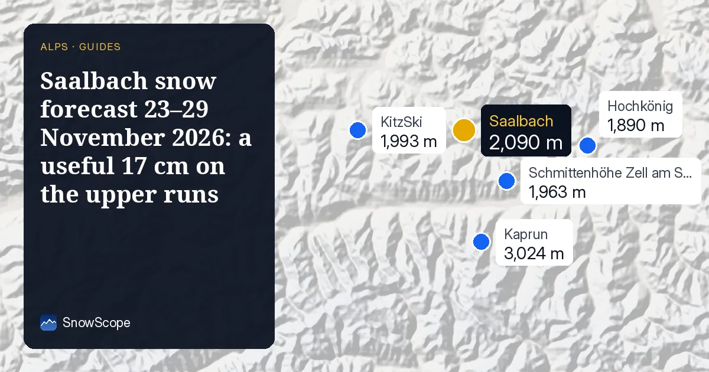

Saalbach snow forecast 23–29 November 2026: a useful 17 cm on the upper runs
Saalbach's forecast for 23 to 29 November centres on 17 cm at the top, 17 cm at mid-mountain and 8 cm at the base. The wide range—3 to 31 cm at the top—reflects real uncertainty about whether the main snow event hits the resort or passes nearby.
See the live snow forecast for Saalbach in the SnowScope appSnow depth, powder alerts and the 3D map, free.

This week versus next week
The current week (17 to 20 November) leaves little deposit: 10 cm at the top, nearly nothing at the base. Next week is where Saalbach gets its better numbers, the opposite pattern of many Alpine resorts this month.
That shift matters for planning. If you are thinking of skiing here before 20 November, expect thin cover on the low slopes. Wait until after 22 November if you want depth.
Snow depth by altitude
The forecast stacks like this: 17 cm near 1900 m (top of the mountain), 17 cm near 1400 m (mid-slopes), 8 cm near 900 m (base station height). The range widens as you go up—3 to 31 cm at the top, only 2 to 14 cm at the base—which tells you the upper mountain is the main battleground for snow, while the base stays marginal.
The jump from base to mid-mountain is striking: 8 cm to 17 cm is a sevenfold difference in the forecast's middle value. This is a typical Skicircus pattern: the summit zones are cold enough to hold snow, the valley floor is not.
Which days will it fall
Most snow arrives Thursday 26 November (3 cm at the top, possibly 5 cm), Friday 27 (4 cm, up to 7 cm) and especially Sunday 29 (6 cm, possibly 13 cm). Between these pulses, expect flurries or trace amounts.
Sunday 29 November is the peak day. Even at the high end (13 cm), that is a fresh layer on the piste, not a powder day. At the low end (less than 1 cm), you are barely refreshing yesterday's base.
Where to ski for the best snow
Hunt the summits: Zwölferkogel, Schattberg and Leogang's Asitz hold the most snow by altitude. The north-facing slopes of Zwölferkogel and Schattberg stay colder and preserve snow better than south or east faces, which soften quickly in November sun.
The valley floors of Saalbach and Hinterglemm in the Glemm valley are the weak link. At 8 cm at base elevation, these runs are thin and may expose grass or rocks where traffic is heavy. If the forecast's low end hits (2 cm at the base), expect ski patrol to rope off steep lower terrain.
Reading the uncertainty
A 3 to 31 cm range at the top, seven days out, is not a prediction—it is a warning. The storm could track north and miss Saalbach entirely (3 cm scenario), or it could stall overhead (31 cm). Both are still possible.
The closer days (20–22 Nov) are more reliable than the end of the week. If you are planning a trip for late November, monitor the forecast again on Wednesday 25 or Thursday 26 to see which edge of the range the weather is taking.
How Saalbach stacks against neighbours
Kitzbühel (21 km away) is in line for 18 cm at the top next week, Mayrhofen (70 km away) for 17 cm and Hintertux (82 km away) for 14 cm. Saalbach sits at 17 cm—effectively tied with its nearest big rival and ahead of the glacier resort.
These small differences (1–4 cm) fall inside the forecast margin of error. None of these resorts stands out as a clear winner next week.
Tips for skiers
- Ski the top elevations (Zwölferkogel, Schattberg, Asitz) and their north faces if snow arrives: they will have the most cover and the best conditions. Avoid the Glemm valley floor early in the week.
- Sunday 29 November is the best single day; if you can only visit once, choose then. Friday 27 is the second option.
- Watch the forecast again on Wednesday 25 November. A wide range means midweek updates often clarify which scenario is unfolding.
- Check the official avalanche bulletin of Salzburg before leaving the piste, especially if you venture onto the north faces of the summits.
- Confirm the resort's lift status before you travel: snow on the mountain does not guarantee lifts are open in mid-November.
About these numbers
Resort snow depths are the deepest snow on the resort's upper slopes on the date shown; they are estimates for an area, not a measurement at one point. Forecasts can change. Always read the official avalanche bulletin before going off-piste.
Cite this report
For research, teaching or the press: the numbers and charts are free to reuse under CC BY 4.0 with this citation.
SnowScope (2026), Saalbach snow forecast 23–29 November 2026: a useful 17 cm on the upper runs, https://snowscope.app/blog/en/2026/11/saalbach-snow-forecast-next-week-23-29-november-2026.html, accessed 2026-11-16
SnowScope (Atlas Labs). (2026, November 16). Saalbach snow forecast 23–29 November 2026: a useful 17 cm on the upper runs. SnowScope snow reports. https://snowscope.app/blog/en/2026/11/saalbach-snow-forecast-next-week-23-29-november-2026.html
BibTeX
@misc{snowscope2026saalbachsnowforecastnext,
author = {{SnowScope (Atlas Labs)}},
title = {Saalbach snow forecast 23–29 November 2026: a useful 17 cm on the upper runs},
year = {2026},
month = nov,
howpublished = {\url{https://snowscope.app/blog/en/2026/11/saalbach-snow-forecast-next-week-23-29-november-2026.html}},
note = {Published 2026-11-16 11:47 UTC; accessed 2026-11-16}
}· CC BY 4.0 · Methods, data and tools →
Saalbach: snow and temperature by height, this winter vs last (tools) →
Follow Saalbach
Free: a message when fresh snow is coming, and the forecast every morning.
More snow reports

How reliable is each?

December in the Southern Alps will be warmer and wetter than usual, but snow depth by year-end should stay close to normal. SnowScope analysis of 11 November 2026.

Livigno's snow today, what the European seasonal forecast says about December, and why height beats a warm month at Christmas.